After years of advancing education and research in Computer Science, Quantum Technologies, and Software Engineering, Constructor Institute of Technology in Schaffhausen, Switzerland has concluded its on-campus operations.
This moment marks not an ending — but a transition.
We are deeply grateful to our students, alumni, faculty, researchers, partners, and staff who shaped our academic community and contributed to innovation, discovery, and excellence.
Together, we built more than programs — we built futures.
While our Schaffhausen campus is closing, our core commitment remains unchanged to educate, empower, and support the next generation by leveraging computing, software and robotics to make every scientist, teacher and student more efficient and effective.
As part of the Constructor Group education ecosystem, we invite you to continue your academic journey through our other institutions:
A top-ranked private, English-speaking university offering world-class research and teaching in a highly international environment.
An international online university offering flexible, career-focused degrees.
A specialized academy for coding, data science, and AI-powered professional training.
If you are a graduate, former student, or partner and require academic documentation or support:
To everyone who was part of Constructor Institute of Technology:
Thank you for your curiosity. Thank you for your dedication. Thank you for shaping the future of science and technology with us.
The knowledge created here will continue — through you!